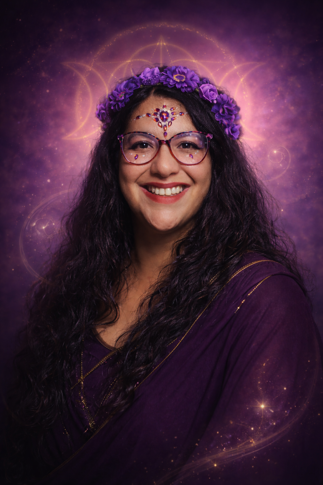
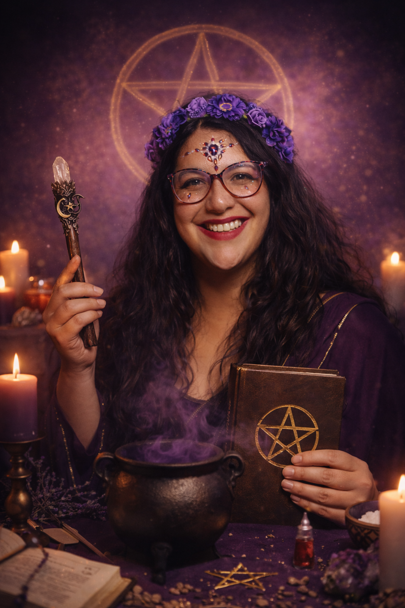
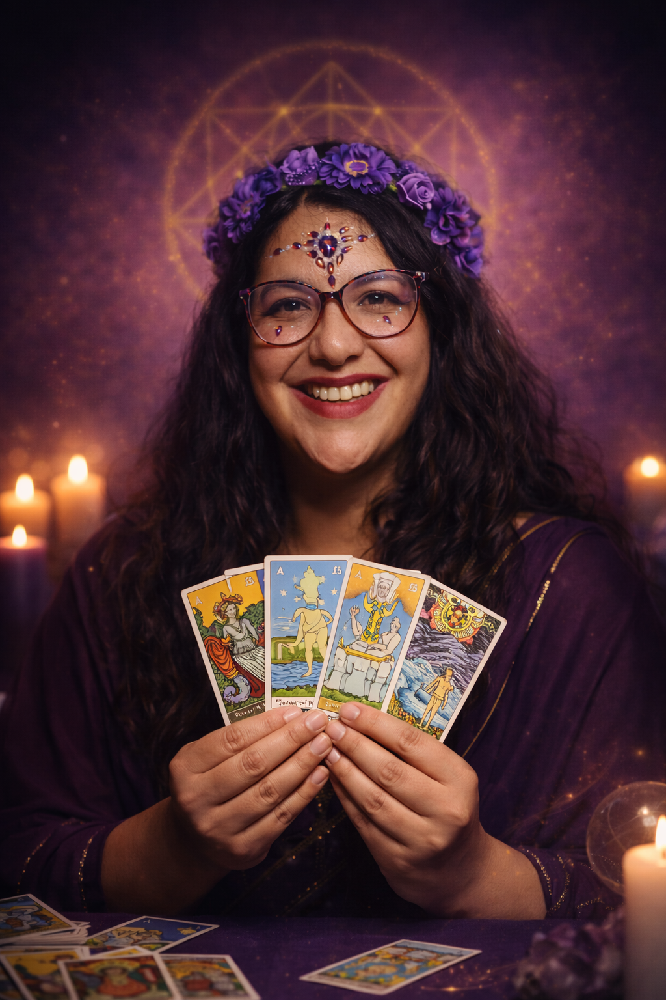

Lectura de Tarot
Tiradas profundas e intuitivas que te dan claridad sobre tu presente, tu camino y los mensajes que el universo tiene para ti. Honesta, directa, con amor.
Para decisiones, bloqueos y dirección de vida Agendar lectura →
El despertar de tu poder sanador.
Un portal hacia quien ya eres.

Llevo más de 20 años caminando el sendero de la magia wiccana ecléctica, el tarot terapéutico y la sanación energética. No enseño rituales de memoria. Enseño a recordar el poder que ya habita en ti.
Mi misión es acompañarte en el despertar de tu intuición, tu magia y tu capacidad sanadora. Porque la magia no está afuera — está en ti, esperando ser despertada con intención, conocimiento y amor propio.
Para quienes necesitan acompañamiento directo, presencial en su camino espiritual.
Tiradas profundas e intuitivas que te dan claridad sobre tu presente, tu camino y los mensajes que el universo tiene para ti. Honesta, directa, con amor.
Para decisiones, bloqueos y dirección de vida Agendar lectura →Rituales creados específicamente para tus intenciones: amor, prosperidad, protección, sanación y manifestación consciente. Cada ritual es un acto sagrado.
Para manifestar, sanar y protegerte Consultar →Liberación de bloqueos, energías densas y patrones que te impiden avanzar. Renueva tu campo energético y vuelve a tu centro de poder.
Para liberar lo que ya no te sirve Consultar →Reiki · Tameana · Péndulo Hebreo · Flores de Bach · Registros Akáshicos · Gemoterapia
Para encontrar tu camino propio Consultar →Elige tu iniciación.

☽ Guardianes de Luz ☾"El despertar de tu poder sanador"
Un programa de introducción completo para mujeres que sienten el llamado de la magia pero no saben por dónde empezar — o que quieren profundizar con una guía real, no tutoriales sueltos. Aprenderás a trabajar con tu energía, la luna, los cristales, las hierbas y los rituales con propósito e intención.
¿Para quién? Para mujeres y hombres que sienten que hay algo más, que han explorado solos y quieren un camino con estructura, profundidad y comunidad real.

✦ Mayo 2026"Lee el tarot, sana tu vida, confía en tu intuición"
Un programa de 4 meses para aprender a leer el Tarot Rider Waite desde un enfoque terapéutico y espiritual. No solo memorizarás cartas — aprenderás a leer la energía, a confiar en tu intuición y a usar el tarot como herramienta de autoconocimiento y acompañamiento para otros.
"Guardianes de Luz cambió mi vida de maneras que no puedo explicar del todo. Carolina tiene una forma de enseñar que te llega al alma. Empecé sintiéndome perdida espiritualmente y hoy tengo una práctica propia que me llena de sentido."
"Tomé el curso de Tarot Terapéutico sin saber nada y hoy leo para mí y para personas cercanas con confianza. La metodología de Carolina es clara, profunda y muy bien estructurada. Vale cada peso."
"La lectura que me hizo Carolina fue un antes y un después. No es una lectura de 'lo que quieres oír' — es honesta, intuitiva y profunda. Me ayudó a tomar una decisión que venía postergando hace meses."
"Nunca pensé que aprender magia podía ser tan ordenado y tan poderoso al mismo tiempo. Carolina enseña con una combinación de conocimiento y presencia que no encuentras en YouTube. La comunidad también es un regalo."
Los cupos son limitados. Escríbeme hoy y hablamos sin compromiso sobre qué camino es el tuyo.
+56 9 8162 0907
La forma más rápida de conectar es por WhatsApp. También puedes dejarme un mensaje y te respondo en menos de 24 horas.
📱+56 9 8162 0907